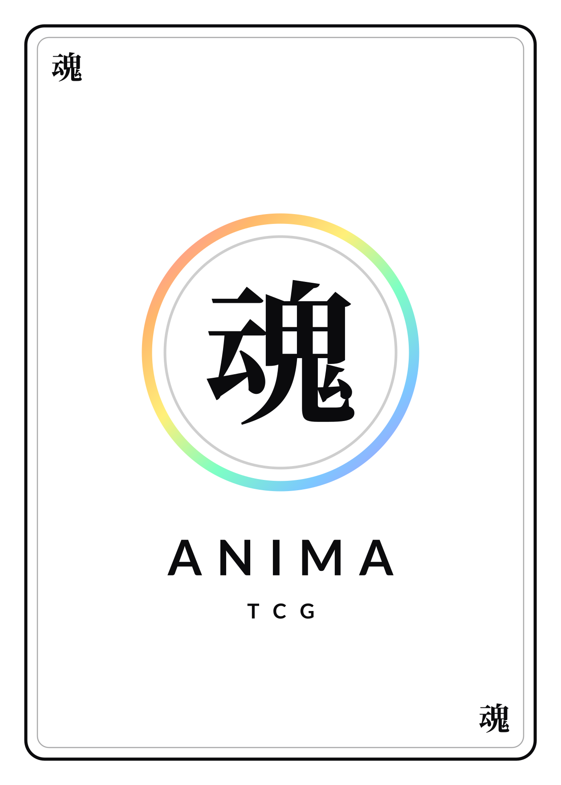

Touche les cartes à mettre dans le classeur (20 au plus). Seules les cartes que tu possèdes sont proposées.
Touche les cartes à mettre dans le classeur (20 au plus). Seules les cartes que tu possèdes sont proposées.

Maintenez pour déclencher l'animation